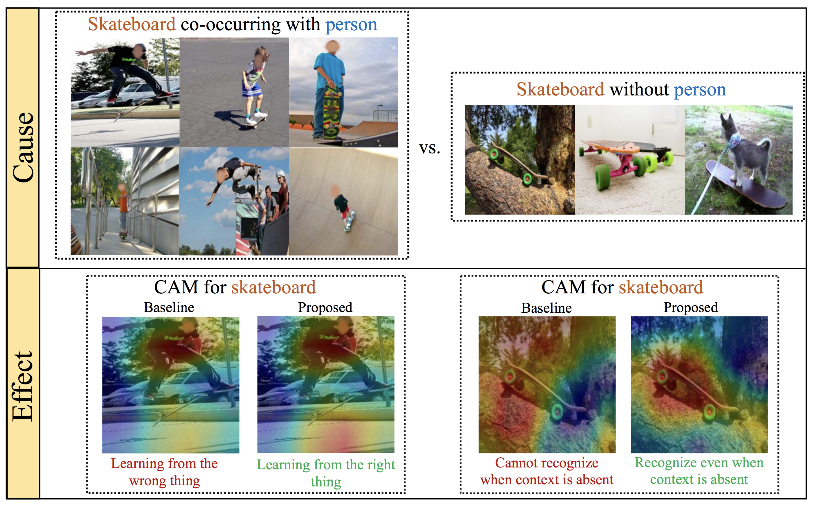

Don’t Judge an Object by Its Context: Learning to Overcome Contextual Bias

Top: Sample training images of the category “skateboard”. Notice how it very often co-occurs with “person” and how all images are captured from similar viewpoints. In the rare cases where skateboard occurs exclusively, there is higher viewpoint variance. Bottom: Such data skew causes a typical classifier to rely on “person” to classify “skateboard” and worse, unable to recognize skateboard when person is absent. Our proposed approach overcomes such context bias by learning feature representations that decorrelate the category from its context.
People
Abstract
Existing models often leverage co-occurrences between objects and their context to improve recognition accuracy. However, strongly relying on context risks a model’s generalizability, especially when typical co-occurrence patterns are absent. This work focuses on addressing such contextual biases to improve the robustness of the learnt feature representations. Our goal is to accurately recognize a category in the absence of its context, without compromising on performance when it co-occurs with context. Our key idea is to decorrelate feature representations of a category from its co-occurring context. We achieve this by learning a feature subspace that explicitly represents categories occurring in the absence of context along side a joint feature subspace that represents both categories and context. Our very simple yet effective method is extensible to two multi-label tasks – object and attribute classification. On 4 challenging datasets, we demonstrate the effectiveness of our method in reducing contextual bias.
Paper
|
|
Additional Materials
Approach
Our feature splitting approach: where images and their associated category labels are provided as input. During training, we split the feature space into two equal sub spaces: Xo and Xs. If a training instance has a biased category occurring in the absence of context, we suppress Xs (no back-prop), forcing the model to leverage Xo. In all other scenarios, Xo and Xs are treated equally. At inference, the entire feature space is equally leveraged.
Qualitative Results
Learning from the right thing: ours-CAM (a) “remote” is contextually-biased by “person.” In the absence of “person,” ours-CAM focuses on the right pixel regions compared to standard. (b) “skateboard” co-occurs with “person.” standard wrongly focuses on “person” due to context bias, while ours-CAM rightly focuses on “skateboard.”
ours-CAM vs. ours-feature-split on the images for which oursfeature-split is able to recognize where as ours-CAM fails. ours-CAM primarily focuses on the object and does not use context whereas oursfeature-split makes use of context for better prediction.
Interpreting ours-feature-split by visualizing CAMs with respect to Wo (left) and Ws (right). Wo has learnt to consistently focus on the actual category (e.g., car) while Ws captures context (e.g., road).
Acknowledgments
This work was supported in part by NSF CAREER IIS-1751206.
Comments, questions to Krishna Kumar Singh